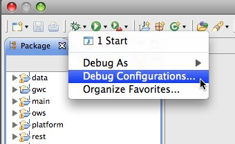
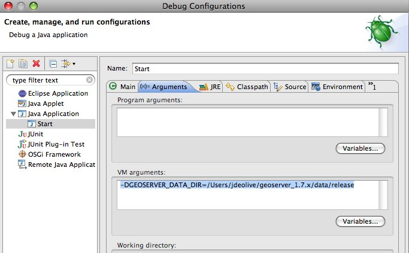

Eclipse Guide¶
A reference for developing GeoServer with Eclipse.
Setting up Eclipse¶
Use of Maven M2 Plugin¶
The Eclipse built-in support for maven can be used to build and run GeoServer, see Eclipse M2 Quickstart for details.
Use of maven eclipse plugin¶
The maven eclipse plugin is used to generate eclipse projects for a set of modules:
mvn eclipse:eclipse
After which the modules can be imported into an eclipse workspace, see Maven Eclipse Plugin Quickstart for details.
A useful feature of the plugin is the ability to download associated source code
for third party dependencies. This is done with the downloadSources flag:
mvn -DdownloadSources eclipse:eclipse
Warning
The first time you enable the downloadSources flag the build will take a long time as it will attempt to download the sources for every single library GeoServer depends on.
Running and debugging¶
Run or debug the class org.geoserver.web.Start in the web-app
module. The steps to do so are detailed in the Maven Eclipse Plugin Quickstart or Eclipse M2 Quickstart.
Running GeoServer with Extensions¶
By default, GeoServer will run without any extensions enabled. In order to run GeoServer with extensions, the web-app module declares a number of profiles used to enable specific extensions when running Start. To enable an extension, re-generate the root eclipse profile with the appropriate maven profile(s) enabled:
% mvn eclipse:eclipse -P wps
The full list of supported profiles can be found in src/web/app/pom.xml.
Setting the data directory¶
If unset, GeoServer will default to the minimal directory inside of the
web-app module for its data directory. To change this:
Open
Debug Configurations...from the Eclipse menuSelect the
Startconfiguration, select theArgumentspanel and specify the-DGEOSERVER_DATA_DIRparameter, setting it to the absolute path of the data directory
Changing the default port for Jetty¶
If unset, Jetty will default to port 8080. To change this:
Open the
Argumentspanel of theStartconfiguration as described in the above sectionSpecify the
-Djetty.portparameter, setting it to the desired port
Configuring JNDI resources in Jetty¶
JNDI resources such as data sources can be configured by supplying a Jetty
server configuration file named in the system property jetty.config.file,
specified as a line in VM arguments in the Arguments panel of the launch
configuration for Start (separate lines are joined when the JVM is launched).
The path to the configuration file is relative to the root of the web-app module,
in which the launch configuration runs. Naming factory system properties must also be
configured for Jetty. For example, VM arguments could include:
-Djetty.config.file=../../../../../settings/jetty.xml
-Djava.naming.factory.url.pkgs=org.eclipse.jetty.jndi
-Djava.naming.factory.initial=org.eclipse.jetty.jndi.InitialContextFactory
The following Jetty server configuration file
configures a JNDI data source java:comp/env/jdbc/demo that is a
connection pool for an Oracle database:
<?xml version="1.0"?>
<!DOCTYPE Configure PUBLIC "-//Mort Bay Consulting//DTD Configure//EN" "http://jetty.mortbay.org/configure.dtd">
<Configure class="org.eclipse.jetty.server.Server">
<New class="org.eclipse.jetty.plus.jndi.Resource">
<Arg>java:comp/env/jdbc/demo</Arg>
<Arg>
<New class="org.apache.commons.dbcp.BasicDataSource">
<Set name="driverClassName">oracle.jdbc.OracleDriver</Set>
<Set name="url">jdbc:oracle:thin:@oracle.example.com:1521:demodb</Set>
<Set name="username">claudius</Set>
<Set name="password">s3cr3t</Set>
<Set name="maxActive">20</Set>
<Set name="maxIdle">10</Set>
<Set name="minIdle">0</Set>
<Set name="maxWait">10000</Set>
<Set name="minEvictableIdleTimeMillis">300000</Set>
<Set name="timeBetweenEvictionRunsMillis">300000</Set>
<Set name="numTestsPerEvictionRun">20</Set>
<Set name="poolPreparedStatements">true</Set>
<Set name="maxOpenPreparedStatements">100</Set>
<Set name="testOnBorrow">true</Set>
<Set name="validationQuery">SELECT SYSDATE FROM DUAL</Set>
<Set name="accessToUnderlyingConnectionAllowed">true</Set>
</New>
</Arg>
</New>
</Configure>
Jetty does not mandate a reference-ref in GeoServer WEB-INF/web.xml,
so there is no need to modify that file. No Jetty-specific information is
required inside the GeoServer web-app module or data directory, so JNDI
resources can be tested under Jetty for later deployment under Tomcat.
See also the tutorial Setting up a JNDI connection pool with Tomcat
in the GeoServer User Manual.
Starting Jetty with an open SSL port¶
The SSL port used 8443.
Open the
Argumentspanel of theStartconfiguration.Specify the
-Dssl.hostnameparameter, setting it to the full qualified host name of the box running Jetty.
On first time startup, a key store is created in <home directory>/.geoserver/keystore.jks.
The password is changeit and the key store contains a self-signed certificate for the host name
passed in the ssl.hostname parameter.
Test the SSL connection by opening a browser and entering https://ux-desktop03.mc-home.local:8443/geoserver. The browser should complain about the self-signed certificate which does not hurt for test and development setups.
Eclipse preferences¶
Code formatting¶
The Google formatter plugin is embedded in the build and will reformat the code at each build, matching the coding conventions. Please always build before committing!
The google-java-format project offers a plugin for Eclipse, but we are waiting an support for ASOP variant. While we wait for this fix build once on the command line, to format the any code changes before committing.
As workaround you could use a modified version with 4 spaces indent by default, putting the jar file on Eclipse dropins folder.
You may also:
Download https://github.com/geotools/geotools/blob/master/build/eclipse/eclipse-java-google-style.xml
Navigate to
Java,Code Style,Formatterand clickImport...Select the
eclipse-java-google-style.xmlfile downloaded in step 1Click
Apply
We follow Google Code Formatting with the AOSP variant (4 spaces indent instead of 2).
For more information see GeoTools Coding Style page.
Code templates¶
Download
codetemplates.xml.Navigate to
Java,Code Style,Code Templatesand clickImport...Select the
codetemplates.xmlfile downloaded in step 1Click
Apply

Text editors¶
Navigate to
General,Editors,Text EditorsCheck
Insert spaces for tabsCheck
Show print marginand setPrint margin columnto “100”Check
Show line numbersCheck
Show whitespace characters(optional)Note
Showing whitespace characters can help ensure that unnecessary whitespace is not unintentionally committed.
Click
Apply